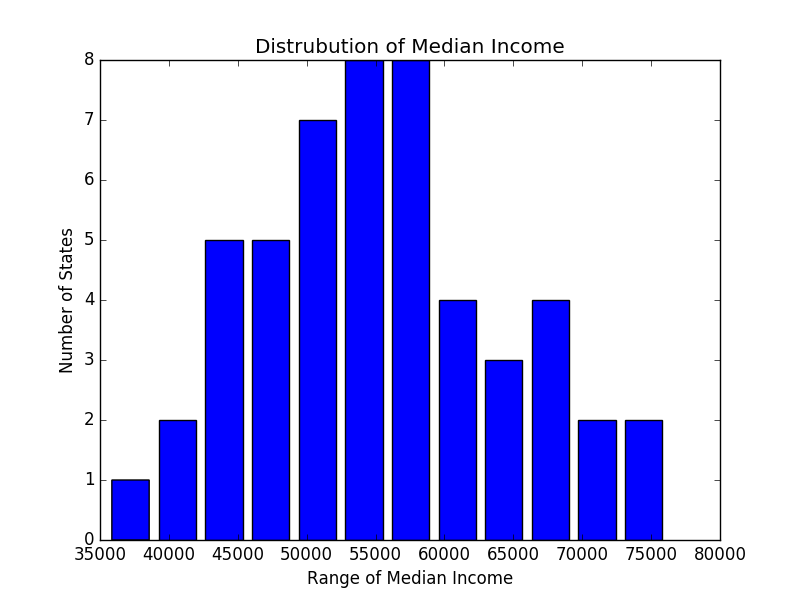

Correlation between both columns: {{ corr_0 }}
Correlation between both columns: {{ corr_1 }}
Correlation between both columns: {{ corr_2 }}
Correlation between both columns: {{ corr_3 }}
Correlation between both columns: {{ corr_4 }}
Histogram Graphs

Data